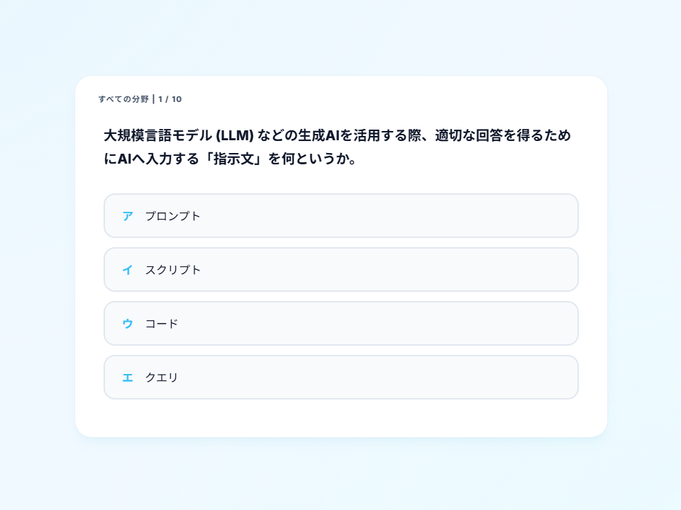
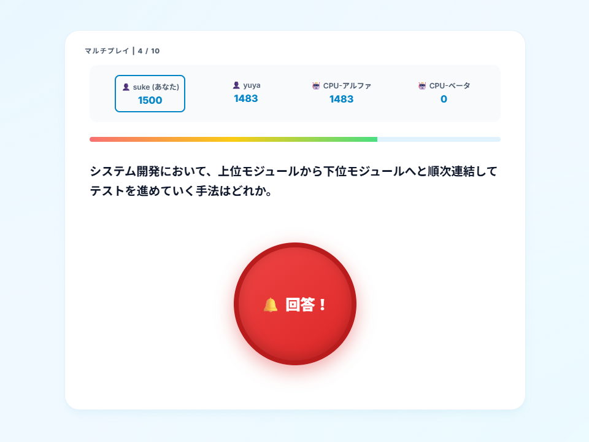

【チーム開発】基本情報技術者試験対策 マルチプレイ対応クイズサイト「FE Speed Quiz」
⚠️ 初回アクセス時のご注意
無料サーバー（Render）の仕様上、アクセス時にログ画面（SERVICE WAKING UP... 等の黒い画面）が表示され、アプリが起動するまでに30秒〜1分ほどかかる場合がございます。画面が自動で切り替わるまで、そのままお待ちいただけますと幸いです。
💡 お試しプレイ（動作確認）のご案内
本アプリは実際にアクセスして動作をご確認いただけます。認証機能としてGoogleログインのほか、個人情報の入力が不要な「匿名でログイン」に対応しております。セキュリティ・プライバシー保護のため、確認の際はぜひ「匿名でログイン」をご選択のうえ、プレイモード（ソロプレイ等）をお試しください。

【ソロプレイ】じっくり過去問に向き合える4択クイズ画面

【マルチプレイ】リアルタイムに競い合う早押しボタン画面
作品概要
複数人で同時に競い合いながら、基本情報技術者試験の過去問対策ができるリアルタイム対戦型のクイズWebアプリケーションです。参加者が同じタイミングで問題に回答し、早押し要素やリアルタイムのスコア変動を体感しながら楽しく学べる環境を目指して制作しました。
開発背景とプロダクトの独自性
💡 なぜ「対戦型」なのか？（試験の分析と設計）
基本情報技術者試験の午前問題において合格点を安定させるためには、「考える前に思い出せるレベルの用語知識」がダイレクトに得点へと直結します。そこで私たちは、単に問題を解くだけでなく、「用語を制限時間内に即座に判別し、1問にかける時間を短縮する訓練」ができる仕組みが必要であると考えました。
✨ 既存サービスに対するアプローチと独自性
定番の学習サービスである「過去問道場」などは、一人で黙々と解くスタイルが中心です。それに対して本プロダクトは、「反射的な知識想起 ✕ 対戦型学習」を掛け合わせることで差別化を図りました。
🎮 学習効果を高めるコア機能の工夫
- 制限時間付きの一問一答 ✕ 早押し形式： 最速回答者に高得点が入る仕様にすることで、知識想起のスピードを引き上げます。また、当てずっぽうを防ぐために「お手付き（誤答）はペナルティ（減点）」となるシビアなルール設計にしました。
- モチベーション維持の仕組み： リアルタイムの得点変動やランキング要素を取り入れ、マルチプレイならではの適度な緊張感の中で楽しく継続できる学習環境を実現しました。
ただ楽しいだけのゲームではなく、競い合う緊張感によって脳を刺激し、「ゲーム性が学習の妨げになるのではなく、むしろ学習効果を最大化させる」という明確な設計思想のもとで開発を行いました。
Socket.io × Firebaseを用いた開発での挑戦と解決策
① 快適な対戦体験を実現するリアルタイム排他制御・ルーム管理
複数人プレイにおいて、早押しボタンの連打や同時押しの排他制御、および5人目以降のプレイヤー発生時のルーム振り分けが課題となりました。
【解決策】 Socket.ioを活用し、誰か一人が回答権を得た瞬間に他プレイヤーの入力ロックを即座に同期する排他制御を実装。また、最大4人の定員を超えた場合は自動的に新規ルームを生成する動的マッチングの仕組みを構築し、低遅延でストレスのないプレイ環境を実現しました。
② プレイヤー離脱やゲーム進行を破綻させないロバストなサーバー設計
ゲーム途中でプレイヤーが切断された場合や、部屋の人数が満たない場合に進行がストップしてしまうリスクがありました。
【解決策】 途中で回答者が切断された際も answerTimer のクリアや全体通知を行いゲームを継続できる例外処理を実装。さらに不足枠を埋めるCPU（Bot）機能を導入し、「毎秒15%の確率で早押し試行」「回答成功率75%」「ランダムな応答遅延」を設定することで、人間らしく自然な対戦相手として機能するアルゴリズムを構築しました。
③ タイマー管理のモジュール化と保守性の向上
ゲーム進行に伴う時間管理（ロビー待機、問題提示、回答タイムアウトなど）において、複数のタイマー処理が混在すると状態遷移の追跡やデバッグが難しくなる懸念がありました。
【解決策】 startLobbyTimer、startQuestionTimer、startAnswerTimer のように、タイマー制御ロジックを責務ごとに分離・関数化。サーバー側の状態遷移を一元管理することで、バグの早期発見と追跡しやすいクリーンなコード構造に設計し直しました。
④ 今後の拡張（モチベーション機能）を見据えた認証基盤の選定
単発のクイズで終わらせず、ユーザーが日々の学習成果を実感できる仕組みを構築するため、将来的には学習ストリーク・称号・グローバルランキング等の機能追加を見据えたアカウント基盤が必要でした。
【解決策】 ユーザーの参加ハードルを下げつつ拡張性を確保するため、Firebase Authenticationを採用。手軽に試遊できる「匿名ログイン」を提供しながら、学習記録を紐付けられる「Googleログイン」への移行ルートを設計しました。また、クライアントのログイン状態をSocket.io側へ連携し、プレイヤー名の自動管理やスムーズな画面遷移を実現しています。
⑤ 実機テストを通じたエッジケース・UIバグの徹底的な解消
複数端末での総合テスト時、Botの超高速回答による画面スキップ問題や、マッチングキャンセル時の画面固着（状態更新漏れ）など、実際のユーザー操作に起因する予期せぬバグが発生しました。
【解決策】 非同期処理のタイミング調整やイベントハンドラの見直しを行い、キャンセル時の状態リセット処理を網羅。各種コーナーケースを愚直に洗い出して修正を重ねることで、安心して遊べる品質まで向上させました。
このプロジェクトを通じて得た学び
Socket.ioを用いたリアルタイム通信サーバーの設計や、Firebase Authenticationによる認証連携、そして複数人が同時にアクセスする環境下での状態管理など、実践的なバックエンド開発の技術を深く学ぶことができました。
特に、単に「機能が動く」だけでなく、プレイヤーの途中切断やBot追加といった例外・コーナーケースへの配慮、タイマー処理のモジュール化によるコードの可読性維持、徹底的なテストを通じたUI/UXのバグ潰しなど、「利用者がストレスなく使い続けられる堅牢なシステムを作る視点」が身についたことは、エンジニアとして大きな成長につながったと感じています。